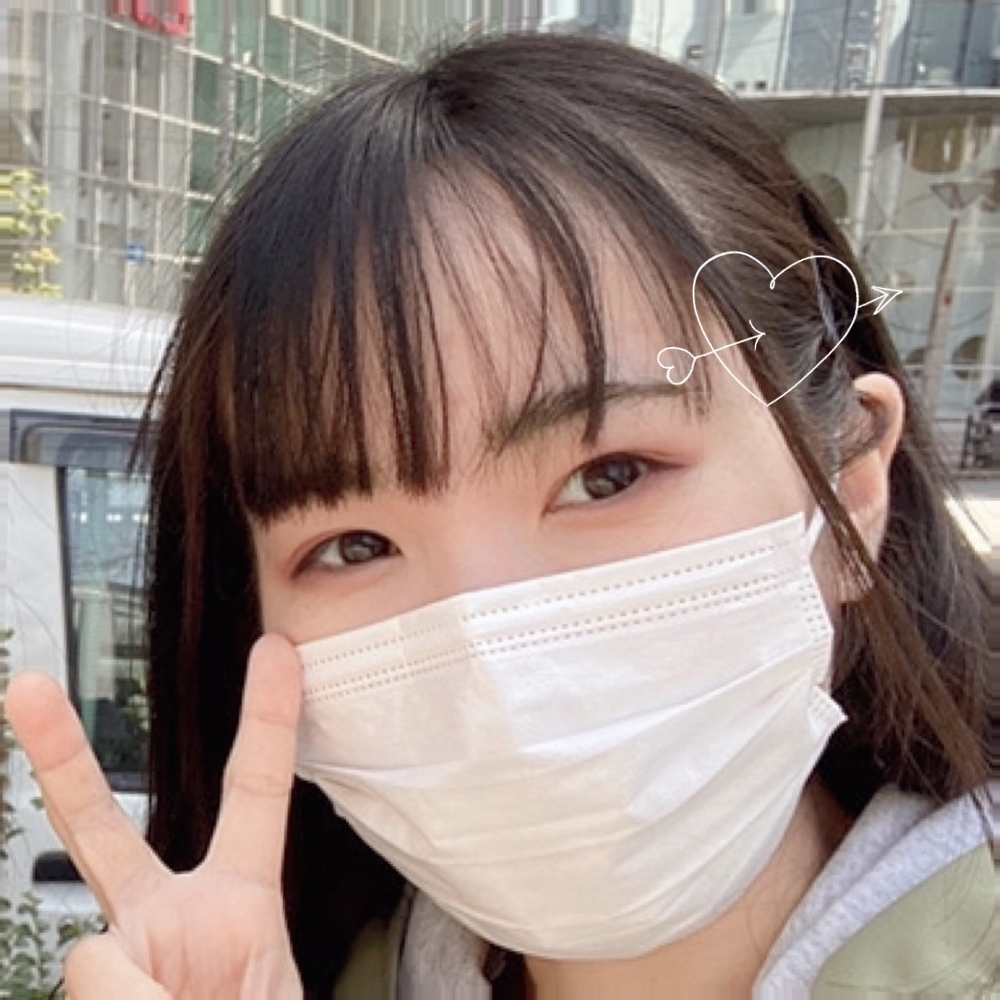

introduction
はじめまして!
ゆうな Yuna
| 年齢 | 19歳 |
| 生年月日 | 2001年10月31日 |
| 出身 | 兵庫県 |
| 出身高校 | 兵庫県の高校 |
| 大学 | 社会情報学部 |
はじめまして！！
Webデザインやプログラミングなどのスキルを伸ばせるように日々努力しています。
好きな事は食べる事と寝る事で特に餃子が好きです！！
また好きな色は黄色なので今回ポートフォリオは黄色をベースにデザインしました！！
趣味はオタ活です！！ よろしくお願いします。